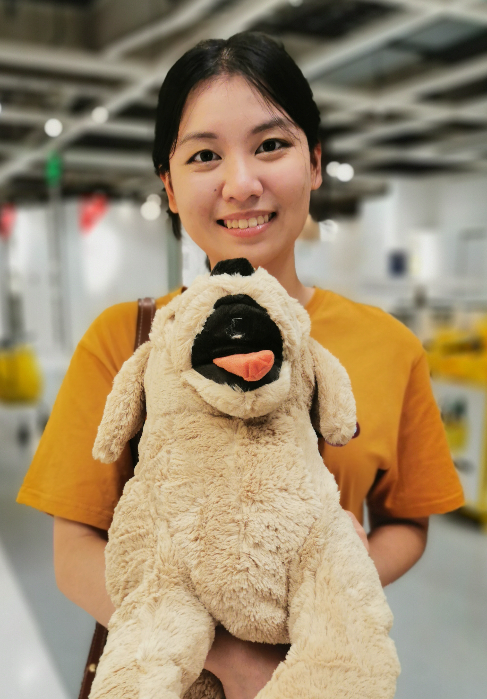

I am a third year Ph.D. student in the Department of Computer Science and Engineering at the University of Notre Dame, advised by Prof. Yiyu Shi in the SCL Lab. I received my B.Eng. degree in the same department at Southern University of Science and Technology (SUSTech), conducting research related to medical image processing under the guidance of Prof. Jiang Liu at iMED. I am interested in AI for personalized healthcare and on-device learning. Recently, I’m exploring ways to incorporate patients’ personalized tabular data (e.g., demographic and clinical information) to improve the accuracy of medical image diagnosis.
Gelei Xu, Xueyang Li, Yixiong Chen, Yuying Duan, Shuqing Wu, Alexander Yu, Ching-Hao Chiu, Juntong Ni, Ningzhi Tang, Toby Jia-Jun Li, Alan Yuille, Wei Jin, and Yiyu Shi
Techrxiv2025
Gelei Xu, Yuying Duan, Zheyuan Liu, Xueyang Li, Meng Jiang, Michael Lemmon, Wei jin, and Yiyu Shi
MICCAI 2025 (early accept, 9%)
Yuying Duan, Gelei Xu, Yiyu Shi, and Michael Lemmon
AISTATS 2025
Gelei Xu, Ningzhi Tang, Jun Xia, Ruiyang Qin, Wei Jin, and Yiyu Shi
DATE 2025
Gelei Xu, Ruiyang Qin, Zhi Zheng, and Yiyu Shi
PhysioCHI 2024
Gelei Xu, Yawen Wu, Zhenge Jia, Jingtong Hu, and Yiyu Shi
MICCAI 2025 workshop
Gelei Xu*, Xiaoqing Zhang*, Zunjie Xiao, Risa Higashita, Wan Chen, Jin Yuan, and Jiang Liu
CSA 2022
Xiaoqing Zhang, Gelei Xu, Junyong Shen, Zunjie Xiao, Qiuyang Yan, Jin Yuan, Risa Higashita, Jiang Liu
ICME 2022
Xiaoqing Zhang, Zunjie Xiao, Lingxi Hu, Gelei Xu, Risa Higashita, Wan Chen, Jin Yuan, Jiang Liu
KBS 2022